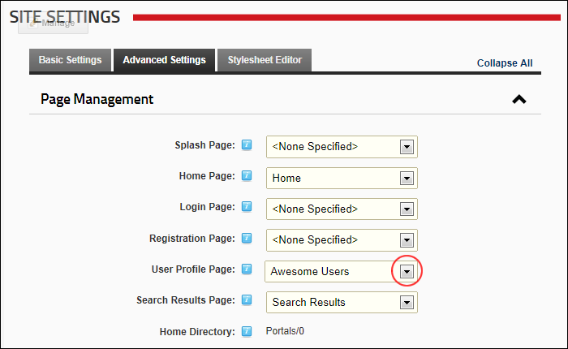

Setting a Custom User Profile Page
How to create and set a custom user profile page for this site. Authorized users to maintain their user credentials, profile, password and services from this page as well as manage messages to and from other site members using the Message Center module. See "About the Message Center Module"
Users with module management rights can also access the MyModules module. See "About the My Modules Module"
Prerequisite. Create a User Profile page:
- Create a new page to your site (E.g. Awesome Users), ensuring permission to view the page is granted to All Users. You may like to set the page as not included in the menu. See "Adding a New Page"
- Add a View Profile module to the page that is visible to all users. See "Adding a New Module (RibbonBar)"
- Add any other modules and content as desired.
Warning. Do not apply this setting without first creating a User Profile page.
- Navigate to Admin >
 Site Settings.
Site Settings.
- Optional. Click on the country flag icon associated with the culture (language) to be updated. This field only displays when multiple languages are enabled. See "Viewing a Site in a Secondary Language"
- Select the Advanced Settings tab.
- Expand the Page Management section.
- At User Profile Page, select the user profile page that you created from the drop down list. E.g. Awesome Users

-
Click the Update button.